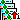

きのぼず: Kinoboards Is Network Opened BOARD System
掲示板一覧へ
KINOBOARDS/1.0
によって運営されている掲示板です．
各メッセージについているアイコンは，次のような機能を表しています．
- ▲ : そのメッセージのオリジナルから，全てのリプライをまとめて読みます．
- ▼ : そのメッセージのリプライをまとめて読みます．
- : 最近書き込まれたメッセージです．
-  : タイトル一覧に戻ります
- : (あれば)前のメッセージを表示します(日付順)
- : (あれば)次のメッセージを表示します(日付順)
- : そのメッセージへのリプライをまとめて読みます
- : リプライとしてでなく，新規に記事を書き込みます
- : リプライを書き込みます
 : 元のメッセージを引用して，リプライを書き込みます
: 元のメッセージを引用して，リプライを書き込みます
KINOBOARDS/1.0:
Copyright (C) 1995-99
NAKAMURA, Hiroshi.